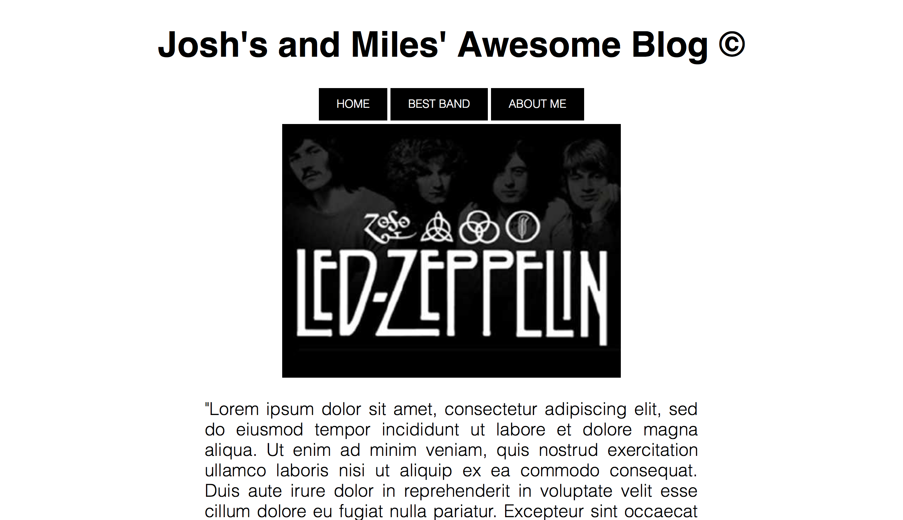
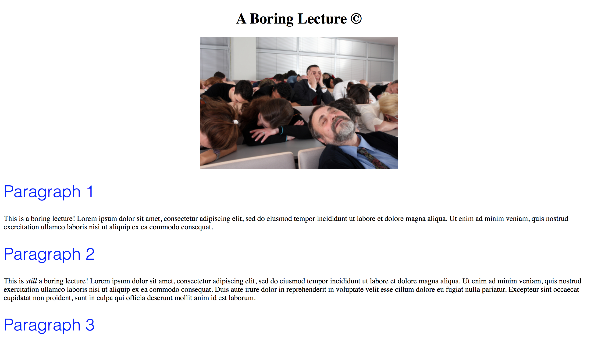
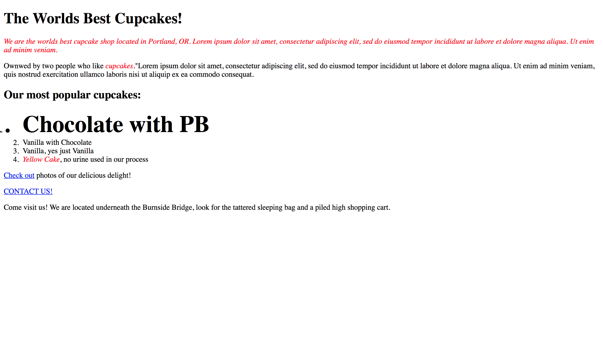
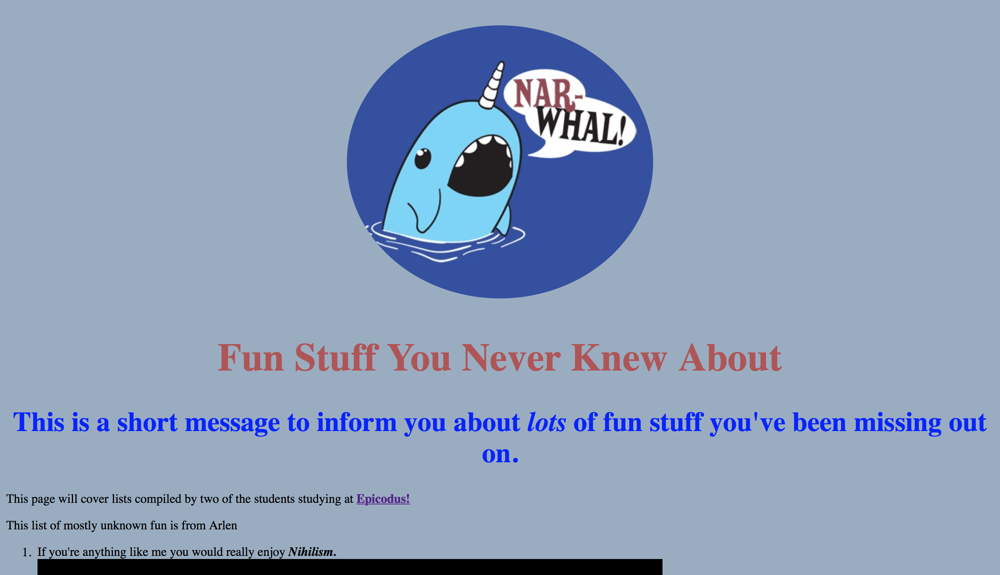
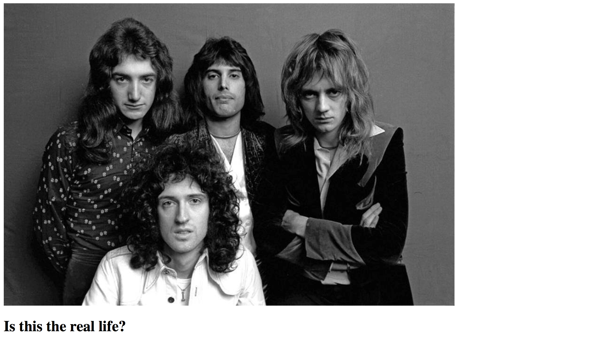

MY PROJECTS
WIKI CLONE
The Wiki Clone project uses HTML, CSS, and Bootstrap to try and recreate the Wikipedia Homepage. Made in conjunction with Niem Nguyen.

BAND BLOG
The Band Blog project uses HTML and CSS to create a blog for a famous musical group. Made in conjunction with Miles Hewitson.
BORING LECTURE
The Boring Lecture Project uses HTML and CSS to create a page for a long boring lecture. Made in conjunction with Miles Hewitson.
CUPCAKE BAKERY
The Cupcake Bakery project uses HTML and CSS to create a site for bakery that is famous for their cupcakes. Made in conjunction with Miles Hewitson.
FUN STUFF
The Fun Stuff project uses HTML, CSS, and Git to create a site about some things that we found fun or funny. Made in conjunction with Arlen.
FIRST WEBSITE
The First Website project uses HTML, CSS, and Git to create our first webpage at Epicodus. Made in conjunction with Arlen.
